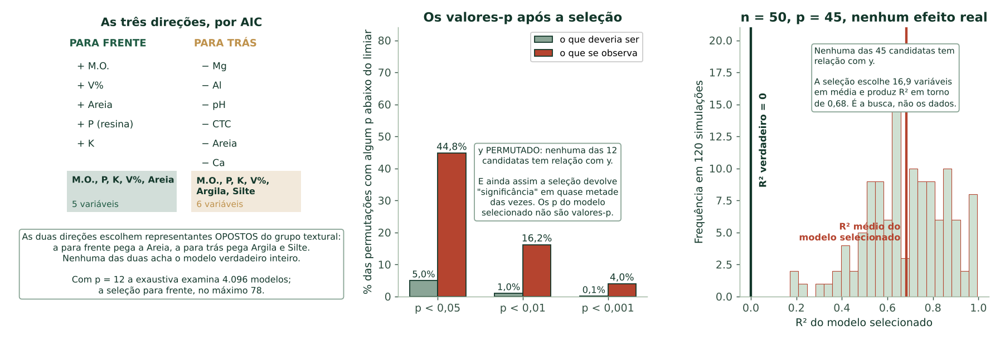
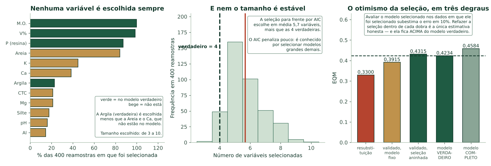

Seleção stepwise por AIC
Acrescenta ou remove uma variável por vez até que nenhum movimento melhore o critério — e os números desta ficha mostram por que o método é tão criticado.
Comece por aqui
A seleção stepwise acrescenta ou remove uma variável por vez, sempre a que mais melhora o critério, até que nenhum movimento melhore. É de longe o método de seleção mais usado — e o mais criticado. Esta ficha apresenta o procedimento com cuidado e, em seguida, mostra numericamente por que a crítica é justificada.
Com \(y\) permutado — nenhuma das doze candidatas guardando relação alguma com a resposta — a seleção para frente por AIC devolve em média 1,37 variáveis, e em 44,8% das 2.000 permutações ao menos uma delas tem \(p<0{,}05\). Com \(n=50\) e 45 candidatas sem efeito, o \(R^2\) médio do modelo selecionado é 0,6836. Nenhum desses números vem dos dados: vêm da busca.
O que é a seleção stepwise
São três procedimentos distintos. A seleção para frente começa no modelo nulo e acrescenta, a cada passo, a variável que mais reduz o critério. A eliminação para trás começa no modelo completo e remove, a cada passo, a variável cuja saída mais reduz o critério. A versão nos dois sentidos considera, em cada passo, tanto acrescentar como remover. Todas param quando nenhum movimento melhora o critério.

| p | Exaustiva: 2^p | Para frente: p(p+1)/2 | Razão |
|---|---|---|---|
| 12 | 4 096 | 78 | 52 |
| 20 | 1 048 576 | 210 | 5 × 10³ |
| 30 | 1,07 × 10⁹ | 465 | 2,3 × 10⁶ |
| 50 | 1,13 × 10¹⁵ | 1 275 | 8,8 × 10¹¹ |
| 100 | 1,27 × 10³⁰ | 5 050 | 2,5 × 10²⁶ |
Nestes dados, com \(p=12\), a seleção para frente examinou no máximo 78 modelos contra 4.096 da busca exaustiva — e chegou ao mesmo subconjunto que a exaustiva encontra no tamanho 5. Isso é tranquilizador quanto ao algoritmo, e não quanto ao método: o problema do stepwise não é ser uma busca aproximada, é ser uma busca.
Pressupostos e como verificá-los
| Pressuposto | Por que importa | Como verificar |
|---|---|---|
| Os do modelo linear | A seleção não dispensa nenhum. | Resíduos do modelo escolhido. |
| n muito maior que p | É o pressuposto mais violado na prática. | n/p ≥ 10, e de preferência mais. |
| Não se reportam valores-p do modelo final | Eles não têm a interpretação usual. | Veja a simulação desta ficha. |
| Hierarquia respeitada | Quadráticos e interações exigem os principais. | Use scope com lower adequado. |
| Mesmo conjunto de observações em todos os passos | Dados faltantes mudam n entre modelos. | Remova NA ANTES de começar. |
| Erro estimado por VC aninhada | Avaliar onde se escolheu é otimista. | Refaça a seleção em cada dobra. |
| Critério declarado antes | AIC, BIC e p dão respostas diferentes. | Escolha e registre antes de rodar. |
| Colinearidade reconhecida | Determina qual representante é escolhido. | VIF antes de começar. |
| Objetivo é PREDIÇÃO, não identificação | O método não identifica mecanismos. | Se o objetivo é explicar, não use seleção automática. |
Se uma candidata tem valores faltantes, o lm remove por padrão as linhas incompletas — de modo que modelos com e sem essa candidata são ajustados a conjuntos diferentes, e os AIC não são comparáveis. O step não avisa. A solução é remover as linhas incompletas (ou imputar) antes de iniciar a seleção, com na.omit aplicado ao conjunto completo de candidatas.
Formulação e cálculo
A cada passo, com o modelo atual \(S\) e \(d=|S|+1\) parâmetros:
Em que:
- \(\mathcal{V}(S)\)
- a vizinhança de \(S\): acrescentar uma, remover uma, ou ambos
- \(\text{SQR}(S)\)
- soma de quadrados dos resíduos do modelo \(S\)
- \(d\)
- número de parâmetros do modelo
- \(n\)
- número de observações (90)
O step do R usa uma constante aditiva diferente — \(\text{AIC}=n\ln(\text{SQR}/n)+2d+n+n\ln(2\pi)\) — de modo que os valores impressos diferem dos calculados aqui por uma constante; as diferenças, que é o que decide, são idênticas.
Exemplo numérico, passo a passo
| Passo | Movimento | AIC antes | AIC depois | Ganho |
|---|---|---|---|---|
| 1 | + M.O. | 13,90 | −30,67 | 44,57 |
| 2 | + V% | −30,67 | −68,86 | 38,19 |
| 3 | + Areia | −68,86 | −80,44 | 11,58 |
| 4 | + P (resina) | −80,44 | −85,25 | 4,81 |
| 5 | + K | −85,25 | −87,77 | 2,52 |
| 6 | (nenhum movimento melhora) | −87,77 | — | — |
| Passo | Movimento | AIC antes | AIC depois | Ganho |
|---|---|---|---|---|
| 1 | − Mg | −77,13 | −79,13 | 2,00 |
| 2 | − Al | −79,13 | −81,12 | 1,99 |
| 3 | − pH | −81,12 | −83,10 | 1,98 |
| 4 | − CTC | −83,10 | −84,97 | 1,87 |
| 5 | − Areia | −84,97 | −86,24 | 1,27 |
| 6 | − Ca | −86,24 | −86,87 | 0,63 |
| 7 | (nenhum movimento melhora) | −86,87 | — | — |
| Direção | Vars. | Variáveis | R² | AIC |
|---|---|---|---|---|
| Para frente | 5 | M.O., P, K, V%, Areia | 0,7108 | −87,77 |
| Para trás | 6 | M.O., P, K, Ca, V%, Argila, Silte | 0,7144 | −86,87 |
| Nos dois sentidos | 6 | idêntico ao de trás | 0,7144 | −86,87 |
| Modelo verdadeiro | 4 | M.O., P, V%, Argila | 0,6801 | — |
As direções para frente e para trás diferem em três variáveis: argila, silte e areia — exatamente o grupo colinear. A para frente, partindo do nulo, encontra primeiro a areia e nunca precisa das outras duas; a para trás, partindo do completo, remove a areia e fica com argila e silte, que juntas carregam a mesma informação com sinal oposto.
Com o BIC a discordância persiste e muda de forma: as três direções escolhem cinco variáveis, mas a para frente fica com a areia e as outras duas com argila e silte.
Nenhuma das direções recupera o modelo verdadeiro. Todas incluem o potássio, que não está nele, e nenhuma delas é "a certa" — porque a pergunta "argila ou areia?" não tem resposta nestes dados.
Propriedades
- Examina no máximo \(p(p+1)/2\) modelos na versão para frente, contra \(2^{p}\) da exaustiva.
- Não há garantia de encontrar o melhor subconjunto de nenhum tamanho.
- As três direções podem discordar, e discordam quando há colinearidade.
- O AIC penaliza pouco e tende a selecionar modelos grandes demais.
- A distribuição amostral do modelo escolhido não é a de um modelo fixo: os valores-p são inválidos.
- Os coeficientes do modelo escolhido são enviesados para longe de zero.
- A escolha é instável sob reamostragem, mesmo com sinal forte.
- Com \(p\) próximo de \(n\), produz \(R^{2}\) alto a partir de dados sem sinal.
Como interpretar os resultados
| Elemento | O que informa | Cuidado |
|---|---|---|
Tabela de passos do step | A sequência de movimentos e o AIC. | Diferenças pequenas de AIC: a escolha é arbitrária. |
formula(m) | O modelo escolhido. | Uma entre várias quase equivalentes. |
summary(m) — estimativas | Coeficientes do modelo escolhido. | Enviesados para longe de zero. |
summary(m) — valores-p | Nada de interpretável. | Não reporte. |
summary(m) — R² | Ajuste do modelo escolhido. | Inflado pela busca. |
add1 / drop1 | O ganho de cada movimento possível. | Útil para ver quão empatadas estão as opções. |
| Erro validado com seleção aninhada | A estimativa honesta. | Sempre bem acima da resubstituição. |
| Frequência de seleção por bootstrap | A estabilidade de cada variável. | É isso que se deve reportar. |
O que fazer com o modelo selecionado
Se o objetivo é predizer, o modelo selecionado é utilizável, desde que o erro seja estimado por validação cruzada com a seleção refeita dentro de cada dobra. Se o objetivo é identificar quais variáveis importam, o modelo selecionado não responde à pergunta: ele responde "qual subconjunto se ajustou melhor a esta amostra", que é diferente. Nesse caso, o que se reporta é a frequência de seleção por bootstrap, e a conclusão honesta é frequentemente "estas duas são consistentes, as demais não se distinguem".
Um valor-p de 0,03 significa: "se esta variável não tivesse efeito, uma estatística tão extrema ocorreria em 3% das amostras". O cálculo supõe que a variável foi escolhida para o modelo antes de ver os dados. No stepwise, ela entrou porque a estatística dela era extrema — a condição do teste foi usada como critério de entrada. Reportar o \(p\) depois disso é circular, e a simulação quantifica o quanto: o que deveria ocorrer em 5% das vezes ocorre em 44,8%.
Como executar no R e em Python
Onde executar o código em Python
Não é preciso instalar nada: o Google Colab é um computador na nuvem, gratuito, que executa Python pelo navegador e já traz as bibliotecas usadas aqui (numpy, scipy e matplotlib).
Tudo o que é necessário está no R base. step(modelo, scope, direction, trace) aceita direction igual a "forward", "backward" ou "both"; para a direção para frente é obrigatório dar o scope com upper, caso contrário não há de onde acrescentar. O argumento k troca a penalidade: k = 2 é o AIC (padrão) e k = log(n) é o BIC. MASS::stepAIC é equivalente e aceita mais classes de modelo. Para ver o que o algoritmo considera em um passo isolado, add1 e drop1 imprimem o ganho de cada movimento possível — é a melhor forma de perceber quão empatadas estão as opções. Antes de tudo, remova as linhas com dados faltantes.
completo <- lm(y ~ ., data = solo); nulo <- lm(y ~ 1, data = solo)
frente <- step(nulo, scope = list(lower = nulo, upper = completo),
direction = "forward")
tras <- step(completo, direction = "backward")
formula(frente); formula(tras) # NÃO coincidem
Exemplo de aplicação
Contexto dos dados
Os dados são fictícios e foram criados pelo autor: 90 amostras de solo de uma área experimental, com a produtividade da cultura (t/ha) e doze variáveis candidatas de análise de rotina — pH, matéria orgânica, fósforo resina, potássio, cálcio, magnésio, alumínio, CTC, saturação por bases (V%), argila, silte e areia. O processo gerador é conhecido e usa apenas quatro delas: matéria orgânica, fósforo, V% e argila, com erro de desvio-padrão 0,60 t/ha. A colinearidade é deliberada e realista: argila, silte e areia somam aproximadamente 100% por construção física, e cálcio, magnésio e potássio estão ligados à CTC e ao V%. Saber qual é o modelo verdadeiro permite verificar se cada método o encontra — o que, em dados reais, nunca é possível. O mesmo conjunto atravessa as seis fichas do grupo.
Código em R
# Seleção stepwise por AIC: exemplo completo ----
# Pacotes: nenhum (step e add1/drop1 são do R base); MASS::stepAIC é equivalente
# Dados fictícios: 90 amostras de solo, 12 candidatas.
# O arquivo solo.csv acompanha o site, na pasta scripts/.
solo <- read.csv("solo.csv")
str(solo) # y (t/ha) e as 12 candidatas
dim(solo)
# O modelo VERDADEIRO (conhecido por construção) usa só quatro:
# y = 4,00 + 0,80*mo + 0,0250*pres + 0,0300*v + 0,0200*argila + erro
cand <- c("ph","mo","pres","k","ca","mg","al","ctc","v","argila","silte","areia")
verdadeiras <- c("mo","pres","v","argila")
# A colinearidade, que é o problema central do grupo
library(car)
vif(lm(y ~ ., data = solo))
round(cor(solo[, cand]), 2)
# ---- 1. As três direções
completo <- lm(y ~ ., data = solo)
nulo <- lm(y ~ 1, data = solo)
frente <- step(nulo, scope = list(lower = nulo, upper = completo),
direction = "forward", trace = 1)
tras <- step(completo, direction = "backward", trace = 1)
ambos <- step(completo, scope = list(lower = nulo, upper = completo),
direction = "both", trace = 1)
formula(frente); formula(tras); formula(ambos)
# As três NÃO coincidem: a para frente pega a AREIA, a para trás pega
# ARGILA e SILTE. São representantes opostos do mesmo grupo colinear.
# Com o BIC, que penaliza mais (k = log(n) em vez de 2):
step(nulo, scope = list(lower = nulo, upper = completo),
direction = "forward", k = log(nrow(solo)))
# ---- 2. O que o step examina em cada passo
add1(nulo, scope = completo) # o ganho de AIC de cada candidata
drop1(completo) # a perda de AIC ao remover cada uma
# ---- 3. OS VALORES-p DO MODELO SELECIONADO NÃO SÃO VALORES-p
summary(frente)
# Todos "significativos". Mas esses p supõem que o modelo foi fixado ANTES
# de ver os dados, e ele foi escolhido OLHANDO os dados.
# A demonstração: y PERMUTADO, sem nenhuma relação com X
set.seed(13)
sim <- t(replicate(2000, {
solo2 <- solo; solo2$y <- sample(solo$y)
n0 <- lm(y ~ 1, data = solo2); nc <- lm(y ~ ., data = solo2)
m <- step(n0, scope = list(lower = n0, upper = nc),
direction = "forward", trace = 0)
k <- length(coef(m)) - 1
pm <- if (k == 0) 1 else min(summary(m)$coef[-1, 4])
c(k = k, p = pm, r2 = summary(m)$r.squared) }))
mean(sim[, "k"]) # variáveis selecionadas, em média
mean(sim[, "p"] < 0.05) # deveria ser ~0,05
mean(sim[, "p"] < 0.01) # deveria ser ~0,01
mean(sim[, "r2"]) # R² médio em dados SEM SINAL
# ---- 4. INSTABILIDADE
set.seed(17)
cont <- numeric(12); names(cont) <- cand; tam <- numeric(1000)
for (b in 1:1000) {
i <- sample(nrow(solo), replace = TRUE); sb <- solo[i, ]
n0 <- lm(y ~ 1, data = sb); nc <- lm(y ~ ., data = sb)
m <- step(n0, scope = list(lower = n0, upper = nc),
direction = "forward", trace = 0)
vs <- setdiff(names(coef(m)), "(Intercept)")
cont[vs] <- cont[vs] + 1; tam[b] <- length(vs)
}
sort(round(100*cont/1000, 1), decreasing = TRUE)
mean(tam); range(tam)
# ---- 5. O ERRO DE PREDIÇÃO: a seleção tem de entrar na validação
set.seed(3)
k <- 10; d <- sample(rep(1:k, length.out = nrow(solo)))
er_an <- er_fix <- numeric(nrow(solo))
fixo <- setdiff(names(coef(frente)), "(Intercept)")
for (j in 1:k) {
tr <- solo[d != j, ]; te <- solo[d == j, ]
n0 <- lm(y ~ 1, data = tr); nc <- lm(y ~ ., data = tr)
m <- step(n0, scope = list(lower = n0, upper = nc),
direction = "forward", trace = 0)
er_an[d == j] <- te$y - predict(m, newdata = te)
er_fix[d == j] <- te$y - predict(lm(reformulate(fixo, "y"), data = tr), newdata = te)
}
mean(er_fix^2) # OTIMISTA
mean(er_an^2) # honesto
# ---- 6. O REGIME EM QUE FRACASSA POR COMPLETO: p próximo de n
set.seed(23)
res <- t(replicate(200, {
Z <- as.data.frame(matrix(rnorm(50*45), 50, 45))
Z$y <- rnorm(50)
n0 <- lm(y ~ 1, data = Z); nc <- lm(y ~ ., data = Z)
m <- step(n0, scope = list(lower = n0, upper = nc),
direction = "forward", trace = 0)
c(k = length(coef(m)) - 1, r2 = summary(m)$r.squared) }))
colMeans(res); max(res[, "r2"])
# NENHUMA das 45 candidatas tem relação com y.
A mesma análise em Python, com os resultados
Cole o código em um notebook do Google Colab ↗ e execute com Shift+Enter. Os valores abaixo são a saída desse código.
import numpy as np, itertools, sys
# ------------------------------------------------------------------
# Bloco comum às fichas deste grupo: funções auxiliares e dados (cab14)
# ------------------------------------------------------------------
import numpy as np, itertools
# ------------------------------------------------------------------
# Bloco comum às fichas deste grupo: funções auxiliares e dados (dados14)
# ------------------------------------------------------------------
import numpy as np
import pandas as pd
def le_csv(nome):
"""Lê o arquivo de dados da ficha: primeiro na pasta atual; se não
estiver lá (por exemplo, no Google Colab), direto do site."""
try:
return pd.read_csv(nome)
except FileNotFoundError:
return pd.read_csv('https://cassiushenrique.github.io/ModelosEstatisticos/scripts/' + nome)
# Dados fictícios: 90 amostras de solo (arquivo solo.csv, pasta scripts/ do site)
solo = le_csv('solo.csv')
NOMES=['ph', 'mo', 'pres', 'k', 'ca', 'mg', 'al', 'ctc', 'v', 'argila', 'silte', 'areia']
ROT={'ph':'pH','mo':'M.O.','pres':'P (resina)','k':'K','ca':'Ca','mg':'Mg','al':'Al','ctc':'CTC','v':'V%','argila':'Argila','silte':'Silte','areia':'Areia'}
X=solo[NOMES].to_numpy(float); Y=solo['y'].to_numpy(float)
VERD={"mo":0.80,"pres":0.0250,"v":0.0300,"argila":0.0200}
N,P=X.shape
# ------------------------------------------------------------------ fim do bloco comum
def pad(A, mu=None, sd=None):
"""Padroniza colunas (média 0, desvio 1, com n-1)."""
if mu is None: mu = A.mean(0)
if sd is None: sd = A.std(0, ddof=1)
sd = np.where(sd < 1e-12, 1.0, sd)
return (A - mu)/sd, mu, sd
def ols(A, y):
Ad = np.column_stack([np.ones(len(A)), A])
return np.linalg.lstsq(Ad, y, rcond=None)[0]
def prev(A, b):
return b[0] + A @ b[1:]
def sqr(obs, p_): return float(np.sum((obs - p_)**2))
def eqm(obs, p_): return float(np.mean((obs - p_)**2))
def ridge(A, y, lam):
"""Ridge em A JÁ padronizado; não penaliza o intercepto."""
n_, p_ = A.shape
G = A.T @ A + lam*n_*np.eye(p_)
b = np.linalg.solve(G, A.T @ (y - y.mean()))
return np.concatenate([[y.mean()], b])
def lasso(A, y, lam, it=20000, tol=1e-11):
"""Descida por coordenadas em A JÁ padronizado (Friedman et al., 2010)."""
n_, p_ = A.shape
b = np.zeros(p_); r = y - y.mean()
nrm = (A**2).sum(0)/n_
for _ in range(it):
mx = 0.0
for j in range(p_):
bj = b[j]
rho = A[:, j] @ (r + A[:, j]*bj)/n_
nb = np.sign(rho)*max(abs(rho) - lam, 0.0)/nrm[j]
if nb != bj:
r = r - A[:, j]*(nb - bj); b[j] = nb
mx = max(mx, abs(nb - bj))
if mx < tol: break
return np.concatenate([[y.mean()], b])
def pcr(A, y, m):
"""Regressão nos m primeiros componentes principais de A padronizado."""
u, s, vt = np.linalg.svd(A, full_matrices=False)
T = (u*s)[:, :m]
g = np.linalg.lstsq(T, y - y.mean(), rcond=None)[0]
b = vt[:m].T @ g
return np.concatenate([[y.mean()], b])
def pls(A, y, m):
"""NIPALS para uma resposta; devolve coeficientes na escala de A."""
Xr = A.copy(); yr = y - y.mean()
W = np.zeros((A.shape[1], m)); Pm = np.zeros((A.shape[1], m)); q = np.zeros(m)
for a in range(m):
w = Xr.T @ yr; w = w/np.linalg.norm(w)
t = Xr @ w; tt = t @ t
pj = Xr.T @ t/tt; qa = (yr @ t)/tt
Xr = Xr - np.outer(t, pj); yr = yr - qa*t
W[:, a] = w; Pm[:, a] = pj; q[a] = qa
Rm = W @ np.linalg.inv(Pm.T @ W)
b = Rm @ q
return np.concatenate([[y.mean()], b])
def dobras(n_, k, seed):
rg = np.random.default_rng(seed)
d = np.tile(np.arange(k), int(np.ceil(n_/k)))[:n_]
rg.shuffle(d); return d
def cv(ajusta, A, y, k=10, seed=0, reps=1):
"""EQM por validação cruzada; TODA a padronização dentro do laço."""
tot = []
for r in range(reps):
d = dobras(len(y), k, seed + 1000*r); e = np.empty(len(y))
for j in range(k):
tr, te = d != j, d == j
Ap, mu, sd = pad(A[tr])
b = ajusta(Ap, y[tr])
e[te] = y[te] - prev((A[te] - mu)/sd, b)
tot.append(float(np.mean(e**2)))
return float(np.mean(tot)), float(np.std(tot, ddof=1)) if reps > 1 else 0.0
def crit(A, y, cols, s2):
"""Cp de Mallows, AIC e BIC de um submodelo."""
Ad = np.column_stack([np.ones(len(A))] + [A[:, j] for j in cols])
b = np.linalg.lstsq(Ad, y, rcond=None)[0]
sq = sqr(y, Ad @ b); n_, d = len(y), len(cols) + 1
return dict(sqr=sq, p=d, r2=1 - sq/np.sum((y - y.mean())**2),
r2a=1 - (sq/(n_ - d))/(np.sum((y - y.mean())**2)/(n_ - 1)),
cp=sq/s2 - n_ + 2*d,
aic=n_*np.log(sq/n_) + 2*d, bic=n_*np.log(sq/n_) + np.log(n_)*d)
def vif(A):
Ap, _, _ = pad(A); out = []
for j in range(A.shape[1]):
o = [i for i in range(A.shape[1]) if i != j]
b = ols(Ap[:, o], Ap[:, j]); r = Ap[:, j] - prev(Ap[:, o], b)
out.append(1/(1 - (1 - r @ r/np.sum((Ap[:, j] - Ap[:, j].mean())**2))))
return np.array(out)
def c(v, d=4):
return ('%.*f' % (d, v)).replace('.', ',')
def lasso_path(A, y, lams, it=5000, tol=1e-10):
"""Caminho do lasso com partida quente (como o glmnet). lams DECRESCENTE."""
n_, p_ = A.shape
b = np.zeros(p_); r = y - y.mean(); nrm = (A**2).sum(0)/n_
out = []
for lam in lams:
for _ in range(it):
mx = 0.0
for j in range(p_):
bj = b[j]
rho = A[:, j] @ (r + A[:, j]*bj)/n_
nb = np.sign(rho)*max(abs(rho) - lam, 0.0)/nrm[j]
if nb != bj:
r = r - A[:, j]*(nb - bj); b[j] = nb
mx = max(mx, abs(nb - bj))
if mx < tol: break
out.append(np.concatenate([[y.mean()], b.copy()]))
return out
def enet_path(A, y, lams, al, it=5000, tol=1e-10):
n_, p_ = A.shape
b = np.zeros(p_); r = y - y.mean(); nrm = (A**2).sum(0)/n_
out = []
for lam in lams:
for _ in range(it):
mx = 0.0
for j in range(p_):
bj = b[j]
rho = A[:, j] @ (r + A[:, j]*bj)/n_
nb = np.sign(rho)*max(abs(rho) - lam*al, 0.0)/(nrm[j] + lam*(1 - al))
if nb != bj:
r = r - A[:, j]*(nb - bj); b[j] = nb
mx = max(mx, abs(nb - bj))
if mx < tol: break
out.append(np.concatenate([[y.mean()], b.copy()]))
return out
def cv_path(ajusta_path, A, y, lams, k=10, seed=0, reps=1):
"""EQM por VC para TODA a grade de lambda de uma vez, com partida quente."""
acc = np.zeros((reps, len(lams)))
for rp in range(reps):
d = dobras(len(y), k, seed + 1000*rp); E = np.zeros((len(lams), len(y)))
for j in range(k):
tr, te = d != j, d == j
Ap, mu, sd = pad(A[tr])
bs = ajusta_path(Ap, y[tr], lams)
Ate = (A[te] - mu)/sd
for i, b in enumerate(bs): E[i, te] = y[te] - prev(Ate, b)
acc[rp] = (E**2).mean(1)
return acc.mean(0), acc.std(0, ddof=1) if reps > 1 else np.zeros(len(lams))
def _cd_gram(G, Ay, lam, al, b, dg, it=10000, tol=1e-11):
"""Descida por coordenadas usando a matriz de Gram: só escalares no laço."""
p_ = len(b)
for _ in range(it):
mx = 0.0
for j in range(p_):
bj = b[j]
rho = Ay[j] - (G[j] @ b - dg[j]*bj)
nb = np.sign(rho)*max(abs(rho) - lam*al, 0.0)/(dg[j] + lam*(1 - al))
if nb != bj:
b[j] = nb; mx = max(mx, abs(nb - bj))
if mx < tol: break
return b
def enet_path_g(A, y, lams, al=1.0):
"""Caminho da rede elástica (al=1 é o lasso) com Gram e partida quente."""
n_, p_ = A.shape
G = A.T @ A/n_; Ay = A.T @ (y - y.mean())/n_; dg = np.diag(G).copy()
b = np.zeros(p_); out = []
for lam in lams:
b = _cd_gram(G, Ay, lam, al, b, dg)
out.append(np.concatenate([[y.mean()], b.copy()]))
return out
def lasso_path_g(A, y, lams): return enet_path_g(A, y, lams, 1.0)
def _cd_ativo(G, Ay, lam, al, b, dg, it=200, tol=1e-11):
"""Descida por coordenadas com CONJUNTO ATIVO (estratégia do glmnet):
varre tudo, depois itera só nos coeficientes não nulos."""
p_ = len(b)
for _ in range(it):
# varredura completa
mx = 0.0
for j in range(p_):
bj = b[j]
rho = Ay[j] - (G[j] @ b - dg[j]*bj)
nb = np.sign(rho)*max(abs(rho) - lam*al, 0.0)/(dg[j] + lam*(1 - al))
if nb != bj:
b[j] = nb; mx = max(mx, abs(nb - bj))
ativo = np.flatnonzero(b)
if len(ativo) == 0 or mx < tol: break
Ga = G[np.ix_(ativo, ativo)]; Aya = Ay[ativo]; dga = dg[ativo]
ba = b[ativo].copy()
for _ in range(2000):
mxa = 0.0
for i in range(len(ativo)):
bi = ba[i]
rho = Aya[i] - (Ga[i] @ ba - dga[i]*bi)
nb = np.sign(rho)*max(abs(rho) - lam*al, 0.0)/(dga[i] + lam*(1 - al))
if nb != bi:
ba[i] = nb; mxa = max(mxa, abs(nb - bi))
if mxa < tol: break
b[ativo] = ba
if mx < tol: break
return b
def enet_path_a(A, y, lams, al=1.0):
n_, p_ = A.shape
G = A.T @ A/n_; Ay = A.T @ (y - y.mean())/n_; dg = np.diag(G).copy()
b = np.zeros(p_); out = []
for lam in lams:
b = _cd_ativo(G, Ay, lam, al, b, dg)
out.append(np.concatenate([[y.mean()], b.copy()]))
return out
def lasso_path_a(A, y, lams): return enet_path_a(A, y, lams, 1.0)
# ------------------------------------------------------------------ fim do bloco comum
from scipy import stats
Xp,mu,sd=pad(X); SQT=float(np.sum((Y-Y.mean())**2))
def ajuste(A,y,cols):
Ad=np.column_stack([np.ones(len(y))]+[A[:,j] for j in cols])
b=np.linalg.lstsq(Ad,y,rcond=None)[0]; sq=sqr(y,Ad@b)
return b,sq,Ad
def aic(sq,n_,d): return n_*np.log(sq/n_)+2*d
def bic_(sq,n_,d): return n_*np.log(sq/n_)+np.log(n_)*d
def passo(A,y,modo,crit_=aic,verb=False,p_ent=0.05,p_sai=0.10,por_p=False):
n_=len(y); pp=A.shape[1]
cur=[] if modo=='frente' else list(range(pp))
hist=[]
while True:
b,sq,_=ajuste(A,y,cur); cc=crit_(sq,n_,len(cur)+1)
cands=[]
if modo in ('frente','ambos'):
for j in range(pp):
if j in cur: continue
b2,sq2,_=ajuste(A,y,cur+[j])
cands.append(('+',j,crit_(sq2,n_,len(cur)+2),sq2))
if modo in ('tras','ambos'):
for j in cur:
o=[k for k in cur if k!=j]
b2,sq2,_=ajuste(A,y,o)
cands.append(('-',j,crit_(sq2,n_,len(o)+1),sq2))
if not cands: break
cands.sort(key=lambda t:t[2])
op,j,novo,_=cands[0]
if novo>=cc-1e-10: break
cur=cur+[j] if op=='+' else [k for k in cur if k!=j]
hist.append((op,j,cc,novo))
if verb: print(' %s%-10s AIC %8s -> %8s'%(op,ROT[NOMES[j]],c(cc,2),c(novo,2)))
return sorted(cur),hist
print('Os mesmos 90 perfis de solo e as mesmas 12 candidatas da ficha subset.')
print('O modelo VERDADEIRO usa quatro: M.O., P (resina), V% e Argila.')
print('A busca exaustiva (4.096 modelos) achou, no tamanho 4: M.O., P (resina),')
print('V% e AREIA — e a areia é quase o complemento da argila.')
print()
print('='*70)
print('AS TRÊS DIREÇÕES, por AIC')
res={}
for modo,rot in [('frente','PARA FRENTE (forward)'),('tras','PARA TRÁS (backward)'),('ambos','NOS DOIS SENTIDOS (both)')]:
print('\n'+rot)
cur,hist=passo(Xp,Y,modo,verb=True)
res[modo]=cur
b,sq,_=ajuste(Xp,Y,cur)
print(' SELECIONADO (%d vars): %s'%(len(cur),', '.join(ROT[NOMES[j]] for j in cur)))
print(' R² = %s | AIC = %s | EQM resub = %s'%(c(1-sq/SQT),c(aic(sq,N,len(cur)+1),2),c(sq/N)))
print()
print('Coincidem?','SIM' if res['frente']==res['tras']==res['ambos'] else 'NÃO')
for a,b_ in [('frente','tras'),('frente','ambos'),('tras','ambos')]:
d=set(res[a])^set(res[b_])
print(' %-7s x %-7s: %s'%(a,b_,'idênticos' if not d else 'diferem em '+', '.join(ROT[NOMES[j]] for j in sorted(d))))
print()
print('Com BIC, que penaliza mais:')
for modo in ['frente','tras','ambos']:
cur,_=passo(Xp,Y,modo,crit_=bic_)
print(' %-7s (%d vars): %s'%(modo,len(cur),', '.join(ROT[NOMES[j]] for j in cur)))
print('\n'+'='*70)
print('STEPWISE contra BUSCA EXAUSTIVA: quantos modelos cada um examina?')
print()
print(' p exaustiva para frente (p(p+1)/2) razão')
for p_ in [12,20,30,50,100]:
print('%4d %9s %20d %s'%(p_,'2^%d'%p_,p_*(p_+1)//2,'%.3g'%(2**p_/(p_*(p_+1)/2))))
print()
cur,_=passo(Xp,Y,'frente')
print('Com p = 12, a exaustiva examina 4.096 modelos e a seleção para frente')
print('examina no máximo 78. E chegou ao mesmo lugar? ',end='')
# melhor de mesmo tamanho pela exaustiva
tam=len(cur); bb=None
for cols in itertools.combinations(range(P),tam):
_,sq,_=ajuste(Xp,Y,list(cols))
if bb is None or sq<bb[0]: bb=(sq,cols)
print('o melhor subconjunto de tamanho %d é'%tam)
print(' %s'%', '.join(ROT[NOMES[j]] for j in bb[1]))
print(' e o da seleção para frente é')
print(' %s'%', '.join(ROT[NOMES[j]] for j in cur))
print(' iguais?',sorted(bb[1])==cur)
print('\n'+'='*70)
print('OS VALORES-p APÓS A SELEÇÃO NÃO SÃO VÁLIDOS')
print()
b,sq,Ad=ajuste(Xp,Y,cur)
s2=sq/(N-len(cur)-1); C=np.linalg.inv(Ad.T@Ad)*s2
ep=np.sqrt(np.diag(C)); t=b/ep
pv=2*(1-stats.t.cdf(np.abs(t),N-len(cur)-1))
print('A saída que o R imprime para o modelo selecionado:')
print('%-12s %10s %10s %9s %12s'%('termo','estimativa','erro-padrão','t','p (NOMINAL)'))
print('%-12s %10s %10s %9s %12s'%('(intercepto)',c(b[0]),c(ep[0]),c(t[0],2),'%.2e'%pv[0]))
for i,j in enumerate(cur):
print('%-12s %10s %10s %9s %12s'%(ROT[NOMES[j]],c(b[i+1]),c(ep[i+1]),c(t[i+1],2),'%.2e'%pv[i+1]))
print()
print('Todos "altamente significativos". Mas esses p supõem que o modelo foi')
print('escolhido ANTES de ver os dados, e ele não foi.')
print()
print('A DEMONSTRAÇÃO: y PERMUTADO, sem nenhuma relação com X, 2.000 vezes.')
print('Em cada permutação, roda-se a seleção para frente e registra-se o menor')
print('valor-p do modelo selecionado.')
rg=np.random.default_rng(13)
menor=[];nsel=[];qsig=0;r2s=[]
for r in range(2000):
yp=rg.permutation(Y)
cu,_=passo(Xp,yp,'frente')
nsel.append(len(cu))
if not cu: menor.append(1.0); r2s.append(0.0); continue
b2,sq2,Ad2=ajuste(Xp,yp,cu)
s22=sq2/(N-len(cu)-1); ep2=np.sqrt(np.diag(np.linalg.inv(Ad2.T@Ad2)*s22))
t2=b2[1:]/ep2[1:]
pv2=2*(1-stats.t.cdf(np.abs(t2),N-len(cu)-1))
menor.append(pv2.min()); r2s.append(1-sq2/np.sum((yp-yp.mean())**2))
if pv2.min()<0.05: qsig+=1
menor=np.array(menor); nsel=np.array(nsel); r2s=np.array(r2s)
print()
print(' variáveis selecionadas (média) %s'%c(nsel.mean(),3))
print(' permutações em que selecionou >= 1 variável %.1f%%'%(100*np.mean(nsel>0)))
print(' permutações com algum p < 0,05 %.1f%% <- deveria ser ~5%%'%(100*qsig/2000))
print(' permutações com algum p < 0,01 %.1f%% <- deveria ser ~1%%'%(100*np.mean(menor<0.01)))
print(' permutações com algum p < 0,001 %.1f%% <- deveria ser ~0,1%%'%(100*np.mean(menor<0.001)))
print(' R² médio do modelo selecionado %s'%c(r2s.mean()))
print(' R² máximo observado %s'%c(r2s.max()))
print()
print('Em dados sem NENHUM sinal, a seleção para frente por AIC devolve em média')
print('%s variáveis, e em %.1f%% das vezes ao menos uma delas tem p < 0,05.'%(c(nsel.mean(),2),100*qsig/2000))
print('\n'+'='*70)
print('INSTABILIDADE: 1.000 reamostras bootstrap, seleção refeita em cada uma')
rg=np.random.default_rng(17)
cont=np.zeros(P); tam=[]; mesmo=0; cur0=set(cur)
for r in range(1000):
i=rg.integers(0,N,N); Xb,_,_=pad(X[i])
cu,_=passo(Xb,Y[i],'frente')
for j in cu: cont[j]+=1
tam.append(len(cu))
if set(cu)==cur0: mesmo+=1
tam=np.array(tam)
print()
print('variável frequência de seleção no verdadeiro? no selecionado?')
for j in np.argsort(-cont):
print('%-10s %6.1f%% %-14s %s'%(ROT[NOMES[j]],100*cont[j]/1000,
'SIM' if NOMES[j] in VERD else '-','SIM' if j in cur0 else '-'))
print()
print('tamanho do modelo selecionado: média %s, de %d a %d'%(c(tam.mean(),2),tam.min(),tam.max()))
print('o conjunto exato da amostra original foi reencontrado em %.1f%% das reamostras'%(100*mesmo/1000))
print('\n'+'='*70)
print('O ERRO DE PREDIÇÃO, honestamente estimado')
d=dobras(N,10,3); er=np.empty(N); escolhas=[]
for j in range(10):
tr,te=d!=j,d==j
Ap,m_,s_=pad(X[tr]); ytr=Y[tr]
cu,_=passo(Ap,ytr,'frente')
b2,_,_=ajuste(Ap,ytr,cu)
Xte=(X[te]-m_)/s_
er[te]=Y[te]-(b2[0]+Xte[:,cu]@b2[1:])
escolhas.append(cu)
_,sqf,_=ajuste(Xp,Y,cur)
print()
print('EQM de resubstituição do modelo selecionado = %s'%c(sqf/N))
dd=dobras(N,10,3); efx=np.empty(N)
for j in range(10):
tr,te=dd!=j,dd==j
Ap,m_,s_=pad(X[tr]); b2,_,_=ajuste(Ap,Y[tr],cur)
Xte=(X[te]-m_)/s_; efx[te]=Y[te]-(b2[0]+Xte[:,cur]@b2[1:])
print('EQM validado, modelo FIXO (selecionado na amostra) = %s <- OTIMISTA'%c(eqm(np.zeros(N),efx)))
print('EQM validado, seleção REFEITA em cada dobra = %s'%c(eqm(np.zeros(N),er)))
print('EQM validado do modelo VERDADEIRO = %s'%c(cv(ols,X[:,[NOMES.index(k) for k in VERD]],Y,10,3)[0]))
print('EQM validado do modelo COMPLETO = %s'%c(cv(ols,X,Y,10,3)[0]))
print()
print('Os modelos escolhidos nas 10 dobras:')
for j,cu in enumerate(escolhas):
print(' dobra %2d (%d vars): %s'%(j+1,len(cu),', '.join(ROT[NOMES[k]] for k in cu)))
tod=set().union(*[set(c_) for c_ in escolhas]); com=set(escolhas[0]).intersection(*[set(c_) for c_ in escolhas])
print()
print('variáveis que apareceram em ALGUMA dobra: %d de 12'%len(tod))
print('variáveis que apareceram em TODAS as dobras: %s'%', '.join(ROT[NOMES[j]] for j in sorted(com)))
print('\n'+'='*70)
print('O REGIME EM QUE O STEPWISE FRACASSA POR COMPLETO: p próximo de n')
print('Simulação: n = 50, p = 45 candidatas, NENHUMA com efeito real.')
rg=np.random.default_rng(23)
r2=[];ns=[]
for r in range(200):
Z=rg.normal(0,1,(50,45)); yz=rg.normal(0,1,50)
Zp,_,_=pad(Z)
cu,_=passo(Zp,yz,'frente')
if cu:
_,sq2,_=ajuste(Zp,yz,cu); r2.append(1-sq2/np.sum((yz-yz.mean())**2))
else: r2.append(0.0)
ns.append(len(cu))
print()
print(' variáveis selecionadas: média %s, máximo %d'%(c(np.mean(ns),2),max(ns)))
print(' R² médio do modelo selecionado: %s'%c(np.mean(r2)))
print(' R² máximo: %s'%c(max(r2)))
print(' proporção com R² > 0,50: %.1f%%'%(100*np.mean(np.array(r2)>0.5)))
print()
print('Nenhuma das 45 candidatas tem relação com y, e ainda assim o R² médio do')
print('modelo selecionado é %s. É a busca, e não os dados, que produz o ajuste.'%c(np.mean(r2)))
Resultados da execução
Os mesmos 90 perfis de solo e as mesmas 12 candidatas da ficha subset. O modelo VERDADEIRO usa quatro: M.O., P (resina), V% e Argila. A busca exaustiva (4.096 modelos) achou, no tamanho 4: M.O., P (resina), V% e AREIA — e a areia é quase o complemento da argila. ====================================================================== AS TRÊS DIREÇÕES, por AIC PARA FRENTE (forward) +M.O. AIC 13,90 -> -30,67 +V% AIC -30,67 -> -68,86 +Areia AIC -68,86 -> -80,44 +P (resina) AIC -80,44 -> -85,25 +K AIC -85,25 -> -87,77 SELECIONADO (5 vars): M.O., P (resina), K, V%, Areia R² = 0,7108 | AIC = -87,77 | EQM resub = 0,3300 PARA TRÁS (backward) -Mg AIC -77,13 -> -79,13 -Al AIC -79,13 -> -81,12 -pH AIC -81,12 -> -83,10 -CTC AIC -83,10 -> -84,97 -Areia AIC -84,97 -> -86,24 -Ca AIC -86,24 -> -86,87 SELECIONADO (6 vars): M.O., P (resina), K, V%, Argila, Silte R² = 0,7144 | AIC = -86,87 | EQM resub = 0,3260 NOS DOIS SENTIDOS (both) -Mg AIC -77,13 -> -79,13 -Al AIC -79,13 -> -81,12 -pH AIC -81,12 -> -83,10 -CTC AIC -83,10 -> -84,97 -Areia AIC -84,97 -> -86,24 -Ca AIC -86,24 -> -86,87 SELECIONADO (6 vars): M.O., P (resina), K, V%, Argila, Silte R² = 0,7144 | AIC = -86,87 | EQM resub = 0,3260 Coincidem? NÃO frente x tras : diferem em Argila, Silte, Areia frente x ambos : diferem em Argila, Silte, Areia tras x ambos : idênticos Com BIC, que penaliza mais: frente (5 vars): M.O., P (resina), K, V%, Areia tras (5 vars): M.O., P (resina), V%, Argila, Silte ambos (5 vars): M.O., P (resina), V%, Argila, Silte ====================================================================== STEPWISE contra BUSCA EXAUSTIVA: quantos modelos cada um examina? p exaustiva para frente (p(p+1)/2) razão 12 2^12 78 52.5 20 2^20 210 4.99e+03 30 2^30 465 2.31e+06 50 2^50 1275 8.83e+11 100 2^100 5050 2.51e+26 Com p = 12, a exaustiva examina 4.096 modelos e a seleção para frente examina no máximo 78. E chegou ao mesmo lugar? o melhor subconjunto de tamanho 5 é M.O., P (resina), K, V%, Areia e o da seleção para frente é M.O., P (resina), K, V%, Areia iguais? True ====================================================================== OS VALORES-p APÓS A SELEÇÃO NÃO SÃO VÁLIDOS A saída que o R imprime para o modelo selecionado: termo estimativa erro-padrão t p (NOMINAL) (intercepto) 9,0579 0,0627 144,51 0.00e+00 M.O. 0,8695 0,0761 11,42 0.00e+00 P (resina) 0,1579 0,0652 2,42 1.75e-02 K -0,2769 0,1330 -2,08 4.04e-02 V% 0,7600 0,1340 5,67 1.97e-07 Areia -0,2936 0,0714 -4,11 9.10e-05 Todos "altamente significativos". Mas esses p supõem que o modelo foi escolhido ANTES de ver os dados, e ele não foi. A DEMONSTRAÇÃO: y PERMUTADO, sem nenhuma relação com X, 2.000 vezes. Em cada permutação, roda-se a seleção para frente e registra-se o menor valor-p do modelo selecionado. variáveis selecionadas (média) 1,367 permutações em que selecionou >= 1 variável 73.7% permutações com algum p < 0,05 44.8% <- deveria ser ~5% permutações com algum p < 0,01 16.6% <- deveria ser ~1% permutações com algum p < 0,001 3.4% <- deveria ser ~0,1% R² médio do modelo selecionado 0,0557 R² máximo observado 0,3188 Em dados sem NENHUM sinal, a seleção para frente por AIC devolve em média 1,37 variáveis, e em 44.8% das vezes ao menos uma delas tem p < 0,05. ====================================================================== INSTABILIDADE: 1.000 reamostras bootstrap, seleção refeita em cada uma variável frequência de seleção no verdadeiro? no selecionado? M.O. 100.0% SIM SIM V% 98.3% SIM SIM P (resina) 88.0% SIM SIM Areia 82.9% - SIM K 43.1% - SIM Ca 37.1% - - CTC 24.8% - - Argila 23.4% SIM - Mg 22.5% - - Silte 17.0% - - pH 16.5% - - Al 14.7% - - tamanho do modelo selecionado: média 5,68, de 2 a 10 o conjunto exato da amostra original foi reencontrado em 11.5% das reamostras ====================================================================== O ERRO DE PREDIÇÃO, honestamente estimado EQM de resubstituição do modelo selecionado = 0,3300 EQM validado, modelo FIXO (selecionado na amostra) = 0,3915 <- OTIMISTA EQM validado, seleção REFEITA em cada dobra = 0,4315 EQM validado do modelo VERDADEIRO = 0,4234 EQM validado do modelo COMPLETO = 0,4584 Os modelos escolhidos nas 10 dobras: dobra 1 (5 vars): M.O., P (resina), K, V%, Areia dobra 2 (5 vars): M.O., P (resina), CTC, V%, Areia dobra 3 (5 vars): M.O., P (resina), Ca, V%, Areia dobra 4 (6 vars): M.O., P (resina), K, Ca, V%, Areia dobra 5 (5 vars): M.O., P (resina), Ca, V%, Areia dobra 6 (5 vars): M.O., P (resina), Ca, V%, Areia dobra 7 (5 vars): M.O., P (resina), K, V%, Areia dobra 8 (5 vars): M.O., P (resina), K, V%, Areia dobra 9 (5 vars): M.O., P (resina), K, V%, Areia dobra 10 (6 vars): M.O., P (resina), K, Mg, V%, Areia variáveis que apareceram em ALGUMA dobra: 8 de 12 variáveis que apareceram em TODAS as dobras: M.O., P (resina), V%, Areia ====================================================================== O REGIME EM QUE O STEPWISE FRACASSA POR COMPLETO: p próximo de n Simulação: n = 50, p = 45 candidatas, NENHUMA com efeito real. variáveis selecionadas: média 17,23, máximo 45 R² médio do modelo selecionado: 0,6836 R² máximo: 0,9948 proporção com R² > 0,50: 83.5% Nenhuma das 45 candidatas tem relação com y, e ainda assim o R² médio do modelo selecionado é 0,6836. É a busca, e não os dados, que produz o ajuste.

| Quantidade | Observado | Esperado |
|---|---|---|
| Variáveis selecionadas (média) | 1,367 | — |
| Permutações com ao menos 1 variável selecionada | 73,7% | — |
| Permutações com algum p < 0,05 | 44,8% | ~5% |
| Permutações com algum p < 0,01 | 16,6% | ~1% |
| Permutações com algum p < 0,001 | 3,4% | ~0,1% |
| R² médio do modelo selecionado | 0,0557 | 0 |
| R² máximo observado | 0,3188 | 0 |
| Variável | Frequência de seleção | No verdadeiro? | No selecionado? |
|---|---|---|---|
| M.O. | 100,0% | SIM | SIM |
| V% | 98,3% | SIM | SIM |
| P (resina) | 88,0% | SIM | SIM |
| Areia | 82,9% | não | SIM |
| K | 43,1% | não | SIM |
| Ca | 37,1% | não | não |
| CTC | 24,8% | não | não |
| Argila | 23,4% | SIM | não |
| Mg | 22,5% | não | não |
| Silte | 17,0% | não | não |
| pH | 16,5% | não | não |
| Al | 14,7% | não | não |
Tamanho do modelo selecionado: média 5,68, variando de 2 a 10. O conjunto exato escolhido na amostra original foi reencontrado em apenas 11,5% das reamostras.
| Estimativa | EQM |
|---|---|
| Resubstituição do modelo selecionado | 0,3300 |
| Validada, modelo FIXO (selecionado na amostra inteira) | 0,3915 |
| Validada, seleção REFEITA em cada dobra | 0,4315 |
| Validada, modelo VERDADEIRO | 0,4234 |
| Validada, modelo COMPLETO | 0,4584 |
| Dobra | Vars. | Variáveis |
|---|---|---|
| 1 | 5 | M.O., P, K, V%, Areia |
| 2 | 5 | M.O., P, CTC, V%, Areia |
| 3 | 5 | M.O., P, Ca, V%, Areia |
| 4 | 6 | M.O., P, K, Ca, V%, Areia |
| 5 | 5 | M.O., P, Ca, V%, Areia |
| 6 | 5 | M.O., P, Ca, V%, Areia |
| 7 | 5 | M.O., P, K, V%, Areia |
| 8 | 5 | M.O., P, K, V%, Areia |
| 9 | 5 | M.O., P, K, V%, Areia |
| 10 | 6 | M.O., P, K, Mg, V%, Areia |
Oito das doze candidatas aparecem em alguma dobra; quatro aparecem em todas: M.O., P, V% e areia.
| Quantidade | Valor |
|---|---|
| Variáveis selecionadas (média) | 17,23 |
| Variáveis selecionadas (máximo) | 45 — todas |
| R² médio do modelo selecionado | 0,6836 |
| R² máximo | 0,9948 |
| Simulações com R² > 0,50 | 83,5% |
| R² verdadeiro | 0 |
Leitura: a tabela da permutação é o resultado mais importante da ficha, e merece ser lida devagar. O procedimento é inatacável: permutar \(y\) destrói qualquer relação com \(X\) sem alterar nem a distribuição de \(y\) nem a estrutura de correlação entre as candidatas. Depois disso, por construção, nenhuma variável tem efeito. A seleção para frente por AIC ainda assim seleciona ao menos uma variável em 73,7% das permutações, e em 44,8% delas alguma variável selecionada tem \(p<0{,}05\). Um procedimento que deveria produzir falsos positivos em 5% das vezes os produz em quase metade.
A razão é direta: a variável só entra se a estatística \(t\) dela for grande; depois de entrar, calcula-se o \(p\) a partir dessa mesma estatística grande. O teste está sendo aplicado à variável que foi escolhida por ter a estatística extrema. Não é um defeito da fórmula do \(p\) — é um uso dela fora das condições em que vale.
Sobre a instabilidade: a comparação entre argila e areia resume o problema. A argila está no processo gerador e é selecionada em 23,4% das reamostras; a areia não está e é selecionada em 82,9%. Se o leitor recebesse apenas o modelo final, concluiria que a textura importa via areia — conclusão agronômica errada, obtida de dados em que a resposta correta é conhecida. Vale notar também que o tamanho escolhido varia de 2 a 10, com média 5,68 contra as 4 verdadeiras: o AIC é conhecido por selecionar modelos grandes demais, e aqui isso se confirma.
Sobre o otimismo: os três degraus são 0,3300, 0,3915 e 0,4315. O salto de 0,3300 para 0,3915 é o otimismo de ajuste, que a validação cruzada comum já corrige. O salto de 0,3915 para 0,4315 é o otimismo de seleção, que só a validação aninhada corrige, e vale 10% do erro. Reportar o número do meio é o erro mais comum na prática, porque parece ser validação cruzada — e é, mas de um modelo que viu os dados de teste.
Sobre o regime p ≈ n: a última tabela é o caso extremo e também o mais frequente em áreas como genômica, sensoriamento e análise de texto, em que as candidatas são muitas. Com 45 candidatas, 50 observações e nenhum efeito real, o modelo selecionado tem \(R^2\) médio de 0,6836, chega a 0,9948, e em 83,5% das simulações passa de 0,50. Um pesquisador que rodasse esse procedimento uma vez e reportasse \(R^2=0{,}68\) com dezessete variáveis "significativas" estaria descrevendo ruído com grande confiança. Nessa situação o stepwise não é inferior ao lasso ou ao ridge: é inutilizável.
Erros comuns
| Erro | Como evitar |
|---|---|
| Reportar os valores-p do modelo selecionado | Não os reporte; use frequências de bootstrap. |
| Interpretar o modelo escolhido como o conjunto de causas | Ele é um entre muitos quase equivalentes. |
| Avaliar o erro no conjunto em que se selecionou | Refaça a seleção dentro de cada dobra. |
| Usar com p próximo de n | Prefira lasso ou ridge. |
| Rodar só uma direção e não comparar | Rode as três; a discordância é informação. |
| Começar sem tratar dados faltantes | AIC de modelos com n diferente não é comparável. |
| Selecionar interações sem os efeitos principais | Use scope com lower adequado. |
| Concluir ausência de efeito pela não seleção | A variável pode ter sido substituída por colinear. |
| Usar valores-p como critério de entrada e saída | Prefira AIC ou BIC; e veja as ressalvas acima. |
| Reportar o R² do modelo selecionado sem ressalva | Ele é inflado pela busca. |
| Apresentar a sequência de passos como narrativa causal | É uma ordem de ajuste, não de importância. |
| Usar stepwise para inferência confirmatória | Para isso, o modelo tem de ser especificado antes. |
Alternativas e fluxo de trabalho
| Procedimento | Quando preferir |
|---|---|
| Seleção exaustiva | Quando p ≤ 30: mesma crítica, mas sem busca aproximada. |
| Lasso | Seleção com encolhimento; funciona com p > n; mais estável. |
| Rede elástica | Candidatas colineares em grupos, como aqui. |
| Ridge | Quando não é preciso selecionar e o alvo é predição. |
| PCR e PLS | Redução de dimensão sem descarte de variáveis. |
| Médias de modelos com pesos de AIC | Quando os modelos estão empatados: combine. |
| Seleção por conhecimento da área | A melhor seleção é a que não usa os dados. |
| Manter o modelo completo | Com p pequeno e alvo preditivo, é defensável. |
| Bootstrap da seleção | Para reportar estabilidade em vez de uma escolha. |
| Inferência pós-seleção | Quando se precisa de p válidos depois de selecionar. |
| Pré-registro do modelo | Para inferência confirmatória: a única solução real. |
- Pergunte-se primeiro se a seleção é necessária: com p pequeno, pode não ser.
- Remova linhas incompletas antes de começar.
- Examine VIF e correlações para saber quais escolhas serão arbitrárias.
- Declare o critério (AIC ou BIC) antes de rodar.
- Rode as três direções e compare: a discordância mede a arbitrariedade.
- Estime o erro por validação cruzada com a seleção REFEITA em cada dobra.
- Rode bootstrap da seleção e reporte as frequências de inclusão.
- Não reporte os valores-p do modelo final.
- Compare o erro validado com o do lasso e com o do modelo completo.
- Ao escrever, descreva o modelo como "um conjunto compatível com os dados", não como "as variáveis que importam".
Referências desta ficha
- EFROYMSON, M. A. Multiple regression analysis. In: RALSTON, A.; WILF, H. S. (ed.). Mathematical methods for digital computers. New York: Wiley, 1960. p. 191-203.
- MILLER, Alan J. Subset selection in regression. 2. ed. Boca Raton: Chapman & Hall/CRC, 2002.
- FREEDMAN, David A. A note on screening regression equations. The American Statistician, v. 37, n. 2, p. 152-155, 1983.
- HURVICH, Clifford M.; TSAI, Chih-Ling. The impact of model selection on inference in linear regression. The American Statistician, v. 44, n. 3, p. 214-217, 1990.
- DERKSEN, Shelley; KESELMAN, H. J. Backward, forward and stepwise automated subset selection algorithms: frequency of obtaining authentic and noise variables. British Journal of Mathematical and Statistical Psychology, v. 45, n. 2, p. 265-282, 1992.
- WHITTINGHAM, Mark J. et al. Why do we still use stepwise modelling in ecology and behaviour? Journal of Animal Ecology, v. 75, n. 5, p. 1182-1189, 2006.
- MUNDRY, Roger; NUNN, Charles L. Stepwise model fitting and statistical inference: turning noise into signal pollution. The American Naturalist, v. 173, n. 1, p. 119-123, 2009.
- SMITH, Gary. Step away from stepwise. Journal of Big Data, v. 5, art. 32, 2018.
- BERK, Richard; BROWN, Lawrence; BUJA, Andreas; ZHANG, Kai; ZHAO, Linda. Valid post-selection inference. The Annals of Statistics, v. 41, n. 2, p. 802-837, 2013.
- BURNHAM, Kenneth P.; ANDERSON, David R. Model selection and multimodel inference. 2. ed. New York: Springer, 2002.
- HARRELL, Frank E. Regression modeling strategies. 2. ed. New York: Springer, 2015.
- HASTIE, Trevor; TIBSHIRANI, Robert; FRIEDMAN, Jerome. The elements of statistical learning. 2. ed. New York: Springer, 2009.
- JAMES, Gareth; WITTEN, Daniela; HASTIE, Trevor; TIBSHIRANI, Robert. An introduction to statistical learning: with applications in R. 2. ed. New York: Springer, 2021.
- VARMA, Sudhir; SIMON, Richard. Bias in error estimation when using cross-validation for model selection. BMC Bioinformatics, v. 7, art. 91, 2006.
- VENABLES, W. N.; RIPLEY, B. D. Modern applied statistics with S. 4. ed. New York: Springer, 2002. (Pacote
MASS, funçãostepAIC.) - R CORE TEAM. R: a language and environment for statistical computing. Vienna: R Foundation for Statistical Computing, 2026. Disponível em: https://www.r-project.org/. (Funções
step,add1edrop1, pacotestats.) - POSIT TEAM. RStudio: integrated development environment for R. Boston: Posit Software, PBC. Disponível em: https://posit.co/download/rstudio-desktop/.
- VIRTANEN, Pauli et al. SciPy 1.0: fundamental algorithms for scientific computing in Python. Nature Methods, v. 17, p. 261-272, 2020. DOI: 10.1038/s41592-019-0686-2. (Funções do módulo
scipy.stats.) - HARRIS, Charles R. et al. Array programming with NumPy. Nature, v. 585, p. 357-362, 2020. DOI: 10.1038/s41586-020-2649-2.
- HUNTER, John D. Matplotlib: a 2D graphics environment. Computing in Science & Engineering, v. 9, n. 3, p. 90-95, 2007.
- GOOGLE. Google Colaboratory. Disponível em: https://colab.research.google.com/.
- As figuras desta ficha foram elaboradas pelo autor.

Prof. Dr. Cássius Henrique Xavier Oliveira
Professor · ICTIN/UFLA · Estatística, Confiabilidade e Ciência de Dados.
Conheça minha trajetória e projetos →